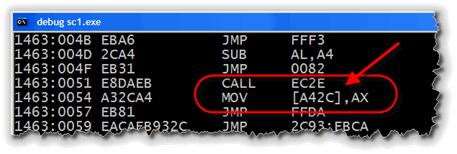

The Iron Age
Back in the computing "iron-age", when programmers wrote their code in machine or assembly language, a programmer would manipulate a data element representing quarterly sales or the velocity of a missile by using the data element's memory address, like the line below, which stores a value (from the CPU's AX register) in the memory location A42C:

When high-level languages, like FORTRAN and COBOL were developed, they made things much easier. Now programmers could use names for the data elements like this:
int velocity = 125;There is no more need to keep track of exactly where the value 125 is stored, not what symbolic value it represents; the compiler takes care of the minutia of associating the address A42C with the velocity.
Even better, though is the fact that the compiler can now keep track of what kind of thing you store in the memory location A42C and warn you if you make a mistake when using it. Just like 7-11 has different kinds of containers for each of their beverages, programmers now have different kinds of variables for different kinds of data.
With high-level languages, variables are no longer just chunks of arbitrary bits; each variable now has a specific data type, like char, boolean, int or double.
 This course content is offered under a
CC
Attribution Non-Commercial license. Content in this course
can be considered under this license unless otherwise noted.
This course content is offered under a
CC
Attribution Non-Commercial license. Content in this course
can be considered under this license unless otherwise noted.